これまでのアップデートを1ページに集約しました
最新は v2.120.0 です。直近の変更はこの下に、それより前は年代順にたたんであります。見出しをクリックすると開きます。
自動更新が有効なので、次に編集を始めるときに自動で反映されます。手動更新したい場合は bash アップデート.sh でOKです。
step05 のカット書き出しが、素材によって必ず失敗する・途中で止まる不具合がありました。受講生の方に実際のファイルを送っていただき、原因を突き止めて直しました。
QuickTime の「ムービーを結合」でクリップをつなぐと、1本の動画の中で音の細かさ（48000Hz → 44100Hz → 48000Hz）が切り替わることがあります。ファイル情報には出てこないので、見ただけでは分かりません。
これまでの作りだと、その切り替わり地点でカットの処理がお互いを待ち合って止まっていました。音を先に1本に揃えてから分ける形に変えて、止まっていた素材が10秒で書き出せるようになりました。
GPU が悪いわけではなく、CPU だと遅いぶん待ち合わせが起きなかっただけです。今後はどちらでも書き出せます。
ffmpeg 9 で廃止された書き方を使っていました。お使いの ffmpeg に合わせて自動で切り替えます。
波形でカット区間の端をドラッグしたとき、伸ばせるのに短くできない場所がありました。短い区間で「終わり」をつかんだつもりが「始まり」と判定され、操作が逆向きになっていたためです。
対談動画の背景ノイズ（エアコン・環境音・遠くの物音）を消す機能を作り直しました。カットピッカーに「ノイズカット (AI)」のスライダーが増えます。
初回だけモデルの取得に 260MB ほどかかりますが、このアップデートのときに自動で落としますので、使うときに待たされることはありません（取得できなくてもアップデート自体は問題なく終わります）。
ご自身で作られた独自のテロップの動きが、プロファイルを適用すると消えてしまう問題を解決しました。動きの定義をデータとして保存し、次のプロジェクトに持ち越せます。
受講生の方の実物と 2,450 フレーム分を突き合わせて、完全に同じ見た目になることを確認しています。あわせて顔アイコンの位置の既定値を調整しました（顔の上に少しかぶる位置に）。
縦長のリール動画など、動画の解像度がテンプレートと違う場合に、テロップや画像がとても大きく（または小さく）表示される不具合がありました。動画の実際の解像度がそのまま画面サイズとして使われていたためです。
/new-video に「YouTube 台本を作る」を追加しました。企画から台本、プロジェクト作成までひと続きで進められます横動画版では直っていたのに、縦動画版に反映されないまま残っていたものです。ご不便をおかけしました。
テロップの1行あたりの文字数上限が横動画版の値（84px で20字）のままで、縦動画の正しい値（84px で11字）になっていませんでした。step07 の確認コマンドが毎回22件のエラーを出す状態でした。
プロジェクトの1つ上の階層に置いた共有の .env を読みに行かず、手順書の説明と実際の動作が食い違っていました。横動画版と同じく、上の階層まで探しに行くようになります。
ダッシュボードで ON にした工程でも、素材フォルダが空だと何も告げずにスキップされていました。今後は ON のまま進み、その工程に入るときに「素材が見つかりません」と1回だけ確認します。
（横動画版では 2026-08-04 にいただいたご意見を受けて対応済みだった挙動です）
設定ファイル・手順書・ルールブックの間で、フォントや文字サイズの記載がバラバラになっていた箇所を実際の動作に合わせて統一しました。このうち2つは見た目に関わります。
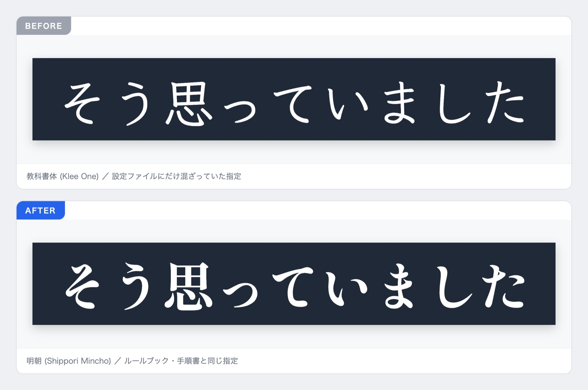
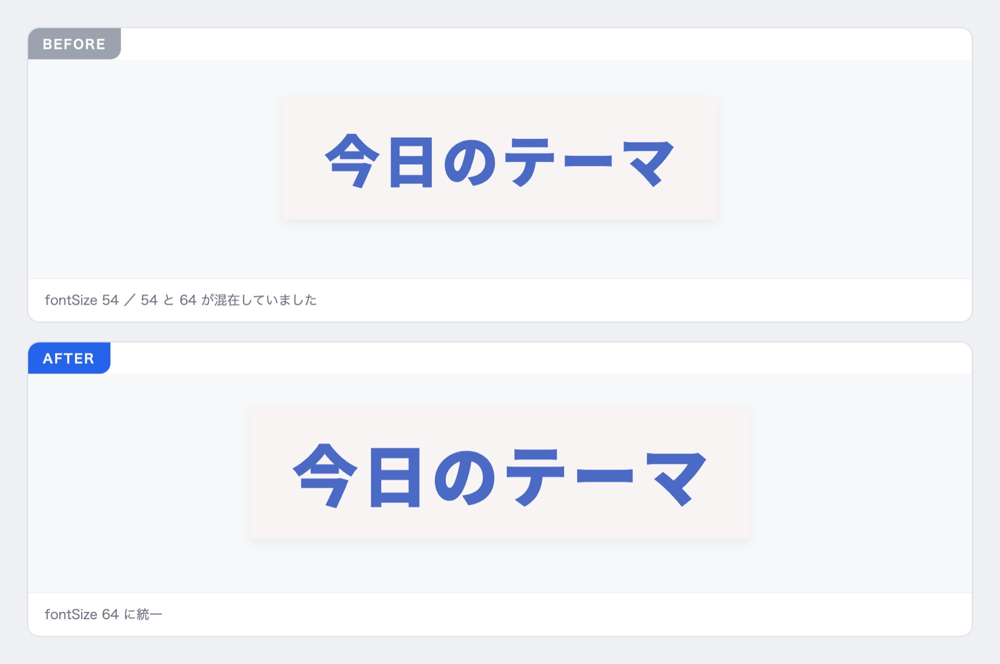
⚠️ 制作中・完成済みのプロジェクトはそのままです
テロップの設定ファイルはアップデートで上書きされません（みなさんが調整した内容を守るためです）。今回の変更が効くのはこれから新しく作るプロジェクトからになります。
進行中の動画で明朝に揃えたい場合は、Claude に「無感情テロップのフォントを明朝にして」と伝えてください。
💡 ついでに、こういうズレが起きにくくなりました
今回の修正は「横動画版だけ直して縦動画版を直し忘れる」ことが原因でした。両版の食い違いを機械が自動で見つける仕組みを大幅に強化しています（チェック対象を7ファイルから150ファイルへ）。手順書とテンプレ設定の食い違いも自動で検出するようになりました。
目玉は「書き出すだけで背景ノイズが消えるように」「タイムラインエディタの操作感アップ」「話者アイコンのサイズ自動化」「手持ちフォント対応」の4つです。
「エアコンや外の音がうるさくて声が聞き取りにくい」問題に、AIノイズ除去 (RNNoise) で答えました。カットピッカーの [書き出し] を押すだけで自動で判定・適用されます。操作は一切不要です。
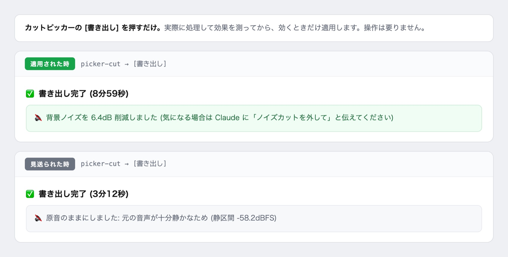
💡 使い方は今まで通りです。step05 のカット → [書き出し] を押す → 完了メッセージに「🔇 背景ノイズを ◯dB 削減しました」と出ていれば適用されています。別タブで再生される動画がすでにノイズ除去済みなので、いつもの聴感確認がそのまま検品になります。
前回登場したタイムラインエディタに、使い込んでこそ効く改善が入りました。
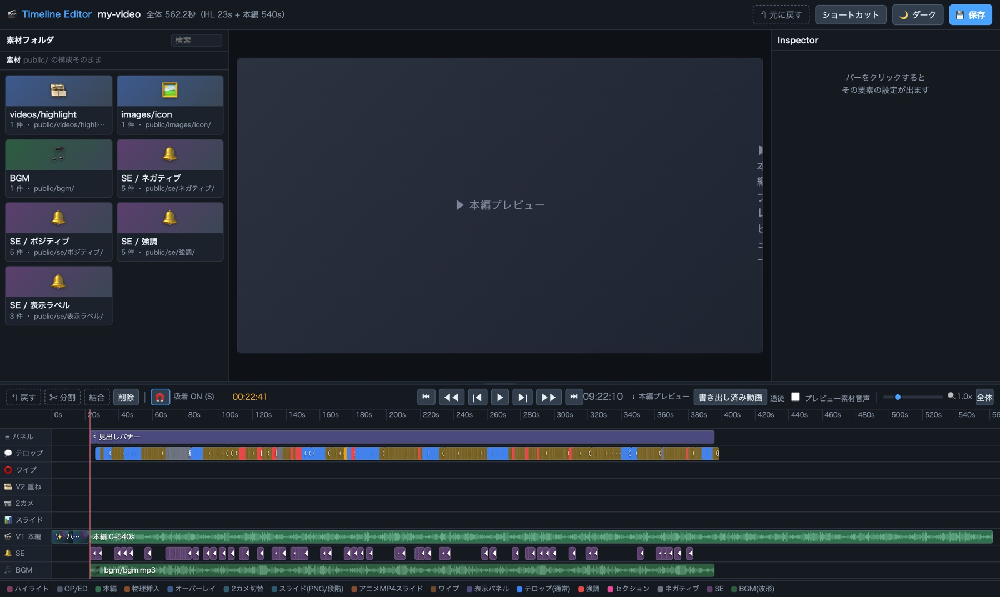
対談動画の話者アイコン（顔検出で話者に追従するアイコン）が進化しました。
みなさんに答えていただいたフォントアンケートの結果を反映しました。ありがとうございました！
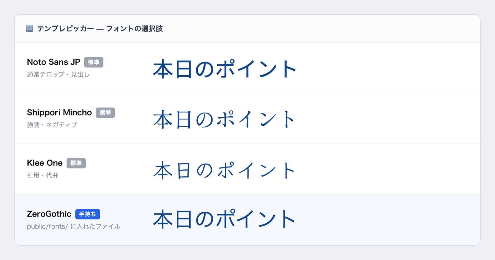
💡 手持ちフォントの使い方（3ステップ）
① フォントファイル（.woff2 / .ttf / .otf）をプロジェクトの public/fonts/ フォルダに入れる（ダッシュボードの「🔤 手持ちフォント」ボタンからワンクリックで開けます）
② テンプレピッカーを起動し直す
③ フォントの選択肢に「◯◯ (手持ち)」として出てくるので、選ぶだけ
⚠️ 2つだけ注意
・ファイル名は半角英数字にしてください（例: ZeroGothic.otf）。日本語やスペース入りの名前は認識されません
・フォントのライセンス（動画への利用可否）は各自でご確認ください。フォントファイル自体は Blueprint からは配布されません
動画完成時に、今回の制作で決めたことの中から次回に引き継げそうなものを Claude が一覧で提示し、選ぶだけで保存できるようになりました。
? キーでショートカット一覧が開きます実際には適用は成功していたので、設定はご安心ください。表示だけの問題を修正しました。
「灰色に見えるのに残ってしまう」ズレが構造的に起きなくなりました。カットの余韻バッファも語尾側だけになり、境界が見やすくなっています。
強調ワードの文字が一部テンプレで表示されない問題 / 箇条書きの項目タイミングがパネル移動に取り残される問題 / レンダリングの誤起動・中断後の二重実行、などを修正しました。
この約3週間で13回のアップデートがありました。目玉は「テロップピッカーがタイムラインエディタに生まれ変わりました」「カットピッカーが動画編集ソフト並みの操作感に」「書き出さずに通し再生で確認できるように」「テロップの選び分けが作り直されました」「編集内容が1分ごとに自動保存されるように」「書き出した動画のちらつき対策」の6つです。
自動更新が有効なので、次に編集を始めるときに自動で反映されます。手動更新したい場合は bash アップデート.sh でOKです。
⚠️ v2.112.0 でアップデートが止まっている方へ
v2.112.0 だけ中身が一部欠けた状態で配布されてしまいました。bash アップデート.sh をもう一度実行して最新版（v2.115.0）にしてください。
テロップを1つずつ直す画面だった「テロップピッカー」が、動画編集ソフトのような9レーンのタイムラインになりました。テロップ・画像/動画素材・スライド・ワイプ・表示パネル・SE・BGM を、1つの画面でまとめて確認・編集できます。横版・ショート版どちらにも入っています。
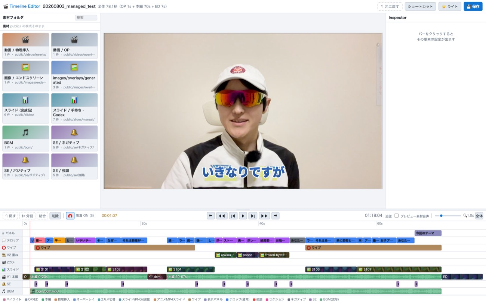
画像や動画がフォルダ別のサムネイル一覧に並び、プレビューしてからタイムラインへドラッグ&ドロップで投入できるように。J=逆再生 / K=停止 / L=早送り の「JKLシャトル」に対応し、レーンとバーの見分けがつく配色に刷新しました。
プレビュー画面の上で素材の移動・リサイズ、ワイプや見出しの位置調整、メイン動画の拡大中心点の指定がマウスで直接できるようになりました。テンプレのホバープレビュー、ワイプの枠線（色・太さ）、グリーンバック背景の差し替えにも対応。保存は「原本を残して必要な箇所だけ書き換える」方式です。
BGMはBGMレーンへドラッグで配置、SEはテロップのバーへドロップするとそのテロップの個別SEに、完成スライドは全画面で配置。音源はクリックでプレビュー再生できます。OP動画も素材フォルダに並ぶようになりました。テロップの分割・カットに W / Q / E（カットピッカーと同じ体系）を追加しています。
本文欄で Enter を押すと改行できるようになりました（2行まで・確定は Cmd/Ctrl + Enter）。1分ごとの自動保存も追加。手が止まって10秒経過し、ドラッグ中でも入力中でもない時だけ動くので作業の邪魔になりません。SEを好きな位置にドラッグ配置できるようにもなりました（移動・長さ変更・音量調整つき）。
毎回必ず通るカット工程が、キーボードだけでサクサク進められるようになりました。作業時間がいちばん直接的に縮む部分です。
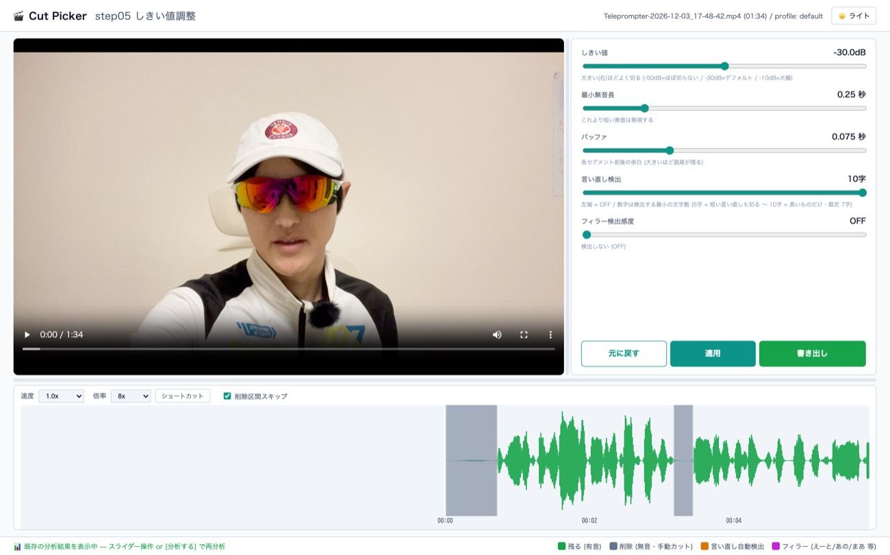
L=順再生 1x→2x→4x→8x / J=逆再生 / K=停止。逆再生でも削除区間はきちんと飛ばします。W=カット点を追加、Q=現在地から前のカット点まで、E=現在地から次のカット点までを一気にカット。Cmd+Z で取り消せます。
Ctrl/⌘+ホイールでなめらかに拡大縮小。停止中はカーソル直下の時刻を固定したまま寄れます。高倍率でも波形が粗くならなくなり、同時に再生中の描画も軽くなりました。
「ショートカット」ボタン（または ? キー）で全操作の一覧が開くようになりました。プレビューと波形の境界、動画と設定パネルの境界をドラッグで調整でき、位置は次回起動時も復元されます。波形を大きくして拡大ズームと組み合わせると細かい調整がしやすくなります。
これまで完成形を確認するには一度レンダリングする必要がありましたが、タイムラインエディタの中で OP → 本編 → 挿入 → ED を通しで再生できるようになりました。確認のたびに待つ時間がなくなります。
再生ヘッドが OP・物理挿入・ED の区間にも入れるようになりました。V2オーバーレイ動画・2カメ・アニメMP4スライドは静止サムネから実際に動く映像に変わり、スライドの Ken Burns（ズーム・パン）やパネルの入退場アニメもプレビューで再現されます。
再生中に速度を変えても即反映。挿入やOP/EDを跨いで倍速シャトルが効きます。ツールバーの「素材音声」トグルをONにすると、音声オンにした素材動画（V2・2カメ）の音が完成品と同じ音量で鳴るようになりました（既定はOFF）。
テロップの種類を選ぶ基準を、言葉の印象から「話し手が視聴者に何をしているか」に変えました。これまで定義があるのに1本も使われていなかった3種類が、実際に出るようになります。
あわせて「無感情」を配布物で有効化しました（濃紺の座布団に白の明朝・文字サイズ108）。これまでは設定上オフになっていて、テンプレピッカーからも選べませんでした。ピッカーの説明文も新しい定義に更新しています。
これまで手作業で直していた整形を、step08 が自動でやるようになりました。意味の判定には一切触れず、機械で決まることだけを直します。対談1本で13箇所が手作業なしで片付きました。何度実行しても同じ結果になります。
表記ゆれの統一も自動になりました。transcript-fixes.json に「誤変換 → 正しい表記」を書いておくと、テロップ生成後にもう一度当て直します。台本が無い動画や、カット後の再文字起こしで同じ化け方が復活したときの取りこぼしを防げます。
AI画像生成に入る前に、何を作るか選べるようになりました。これまでは「本編に挿す画像」しか作れませんでした。
手持ちの画像を用意した場合は、置き場所をAIが決めるようになりました。ファイル名で分からない画像は中身を見て判断し、台本と照らして配置します。合う場所が無い画像は無理に使わず報告します。
インサート画像にもアニメーション（ズーム・パン）が付くようになりました。話者と反対方向へ動くので、画面が単調になりません。
なお v2.115 で、章の区切りに入れる画像の呼び名を「アイキャッチ」に統一しました（これまで内部で「見出し」と呼んでいて紛らわしかったためです）。あわせて、選んでも動画に入らなかった「YouTubeサムネイル生成」の選択肢を削除しました。
これまでプロファイルはフォントや色といった設定値だけを保存していましたが、動画の完成時に「次回もこうして」と伝えた内容をそのまま次の動画に引き継げるようになりました。
引き継げるのはデザインの話だけではありません。
また、デザインの保存と、指示の保存を別々に聞くようになりました。これまでは4択から1つしか選べず、デザインを保存すると指示が保存できませんでした。今は片方だけ・両方・どちらもしない、が選べます。
完成した動画からAIが「癖」を自動学習する仕組みは取りやめました。
実際の動画9本で調べたところ、差分の95%は表記統一や2行化などすでに自動でやっている作業か、その後ルール自体が変わった箇所でした。そのまま覚えさせると、やめたはずの古いルールが次の動画で復活してしまいます。今はあなたが「次回もこうして」と言ったことだけを記録します。
ハイライトピッカーがツールに追加され、名称も分かりやすく整理しました（テロップ → タイムライン / プレビュー → 最終確認）。
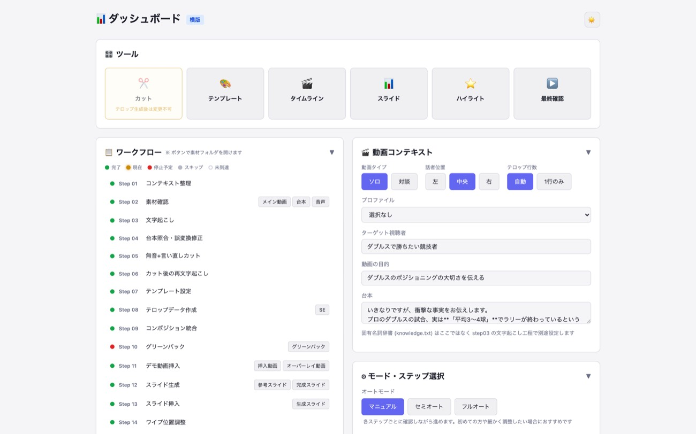
スライド用フォルダの導線も用途別に整理しました。Step12 に「参考スライド」（Codexに真似させる見本）と「完成スライド」（Canva・PowerPointの完成品を入れる場所）、Step13 に「生成スライド」（最終成果物）です。
v2.115 で入力欄も広げました。「カスタム指示」は「今回の進め方」に改名し（プロファイル側の「カスタム指示」と紛らわしかったため）、1行しかなかった入力欄を4行に。台本の入力欄も2行から8行にしたので、貼り付けた中身が見えるようになりました。
これまで常に確保していた「右上ワイプ用の円形ゾーン」「下部テロップ用の帯ゾーン」を、生成前に1回だけ選べるようになりました（①両方空ける（推奨）／②テロップ帯のみ／③どちらも空けない）。②③を選んでもワイプの表示自体は止まりません（既定で表示されます）。本当に非表示にしたい場合は step14 で別途オフにしてください。
AI画像・スライドをCodexで複数枚生成するとき、1枚ずつ順番に作っていたのを並行実行に変更しました。「枚数 × 5分」だったのが、ほぼ1枚分の時間で終わります。
ワークショップでご報告いただいた「動画がちらつく」症状の対策として、GPU合成を既定OFFに戻しました。発生時期がGPU合成を有効にした時期と一致しており、Remotion公式も「angleには既知のメモリリークがあり、長いレンダリングは分割を推奨」と明記しています。
アップデートすれば自動的に無効化されるので、操作は不要です（以前 setup-remotion-gl.mjs を実行した方も含みます）。レンダリングは1.2倍ほど遅くなりますが、ちらつく動画を速く作っても意味がないための判断です。
NAOKI_BP_GL=1 で有効化できます）
テロップの選び方を作り直した（v2.114）のに、テンプレピッカーに出る説明文が古い定義のままでした。特に「危機感」は例が逆になっていました。横動画・縦動画の両方を直しています。
動画完成時に「次回もこうして」と伝えた指示を保存しても、プロファイルを作ったあとは一度も読まれていませんでした。保存先がプロファイルのある時は参照されない場所だったためです。保存先をプロファイルの中に変更しました。すでに古い場所に溜まっている場合は、次の動画の完成時に一度だけ中身を出して、移すかどうか確認します（勝手には動かしません）。
通常テロップ・相手テロップに座布団を付けると、プレビューでは綺麗なのに書き出すと約36px下にズレていた問題を修正しました。この4種類だけ文字の基準線の扱いが違っていたのが原因です。文字の位置は一切変えていないので、既存動画の見た目は変わりません。
タイムラインエディタでテロップのテンプレートを変えたとき、プレビューで文字の色が抜けて白い縁だけに見えてしまう問題を修正しました。プレビュー画像を取りに行っている間の仮表示が原因でした。
座布団・縁取り・影などをテンプレピッカーで変えても、タイムラインエディタのプレビューに反映されない問題を修正しました。
ショート版のテンプレピッカーで影・座布団・斜体・グラデ等を変えてもプレビューに反映されない問題を修正しました。保存自体は効いていたため、完成動画には従来から正しく反映されています。カラーが2列になる表示崩れも直しました。
テロップの文字サイズを個別に変更した場合も、その実際のサイズで文字数上限を判定するようになりました。3行以上のテロップも警告されます。
プレビューの文字が完成した動画と違う字形で描かれていました。修正後は明朝体・角ゴシックとも完成品と同じ字形で表示されます（横版・ショート版とも）。
ピッカーで設定した「メイン音量」が書き出しに反映されない実バグを根治しました。未対応のプロジェクトには、2行だけの限定移行手順を案内します。
箇条書きの項目編集が完成品に反映されない／項目数を変えると無言のまま壊れる、という2つの問題を修正しました。
物理挿入（動画を本編に割り込ませる方式）を使うと、挿入点より後ろのテロップ・SE・素材が挿入分だけ遅れて表示され、ベース動画が挿入点で頭から再生し直される不具合を根治しました（横版・ショート版とも）。
ダッシュボードでONにした工程が、素材が無いという理由で黙ってスキップされていたのをやめました。AIで作れる工程はそのまま進み、実素材が要る工程は開始時に「素材を今から入れる／この工程は飛ばす」を1回だけ確認します。
Braveのみ等の環境で step13 のスライド撮影が丸ごと失敗していました。Remotionに同梱のブラウザを使うようにして解決しています。
昔に保存したプロファイルが「必須の項目が足りない」と判定されて適用できなかった問題を修正。さらに古い形式（schema 3）のプロファイルは適用時に自動で新形式へ移行するようになりました。手を加えた形跡がある場合は黙って上書きせず、選択肢を案内して止まります。
フルHD未満の画面で、カットピッカーの波形パネルが動画の下部に重なって再生ボタン・時刻が見えなくなる問題を修正しました。「書き出し」ボタンも常に表示されます。
対談動画のワイプは顔が中央に来るよう配置基準を変更しました。あわせて文字起こし修正の照合元に knowledge.txt を追加し、knowledge.txt には正しい表記だけ書けばよいことを説明に明記しました（文字起こしがSpeechmatics前提になったため）。
特殊な文字が混入したファイルが検査対象から黙って外れ、そのファイルだけ他の検査もすべて素通りしていた不具合を修正しました。
SEの既定音量を 0.08 → 0.13 に引き上げ（声を基準にした業界目安に整合）。カットピッカーの「言い直し検出」つまみが7段階に（OFF / 5〜10字・既定7字）。step04の文字起こしレビューが生成後に自動でエディタで開くように。「素材ビン」の表記を「素材フォルダ」に変更しました。
この3日間で4回のアップデートがありました。目玉は「ハイライトもピッカーで作れるように」「画像・スライド生成にCodexという新しい選択肢が増えた」「グリーンバックでパソコンが消える問題への対策」「APIキー設定がラクに」の4つです。
自動更新が有効なので、次に編集を始めるときに自動で反映されます。手動更新したい場合は bash アップデート.sh でOKです。
これまで縦の切り抜き専用だった「ピッカー」画面が「Highlight Picker」にリニューアル。横動画の冒頭に入れるハイライト（本編ダイジェスト）も、ブラウザ画面をポチポチするだけで作れるようになりました。2回のアップデートでここまで進化しています。
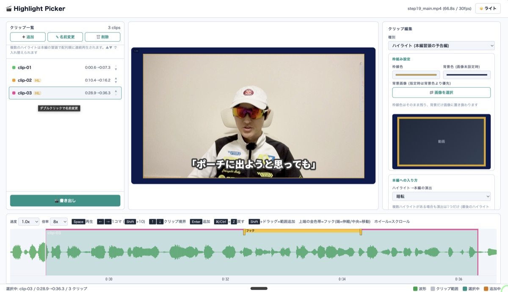
使いたい区間を選ぶだけで枠線の色・背景画像・切り替え演出（黒/白フェード）を設定。複数のハイライトを好きな順番に並び替え可能。書き出しボタンひとつで「縦切り抜き」と「ハイライト」を同時生成し、本編冒頭に自動連結された完成品まで一気に作れます。
画面下部の「見出し」が固定デザイン+色選択のみだったのを、上部の「コメント」と同じ10種類のテンプレートから選べるように。2行入力にも対応し、新規クリップの初期値も「ショート」から「ハイライト」に変更しました。
ハイライトのループ再生後、本編の頭出し位置に戻った際に金色の枠線が消えずに残ってしまう不具合を修正しました。
Codex CLI（OpenAIのコーディングエージェント）をすでに導入・ログイン済みの方向けに、Lovart・Geminiに続く3つ目の生成方法としてCodexでの画像生成が使えるようになりました。追加の課金は発生しませんが、コーディング支援と利用枠を共有します。
感情ベースの画像挿入で、横動画・縦動画どちらでもCodexでの生成を選べるように。実写1枚が主役になる場面ではワイプ/テロップ用の空けゾーンを指定しない方が自然な構図になることを確認し、その設計を反映しています。
スライド生成の最初に、①HTMLスライド自動生成（推奨）／②参考画像のスタイルをCodexで再現（実験的）／③手持ちの完成スライドをそのまま使うの3択を必ず確認するようになりました。②は、お手元の参考デザイン画像（Canva等で作ったもの）を1枚ずつCodexが見たまま踏襲してスライド画像を生成します。段階表示演出や生成後の微調整は使えませんが、既存の受講生デザインをそのまま活かせます。
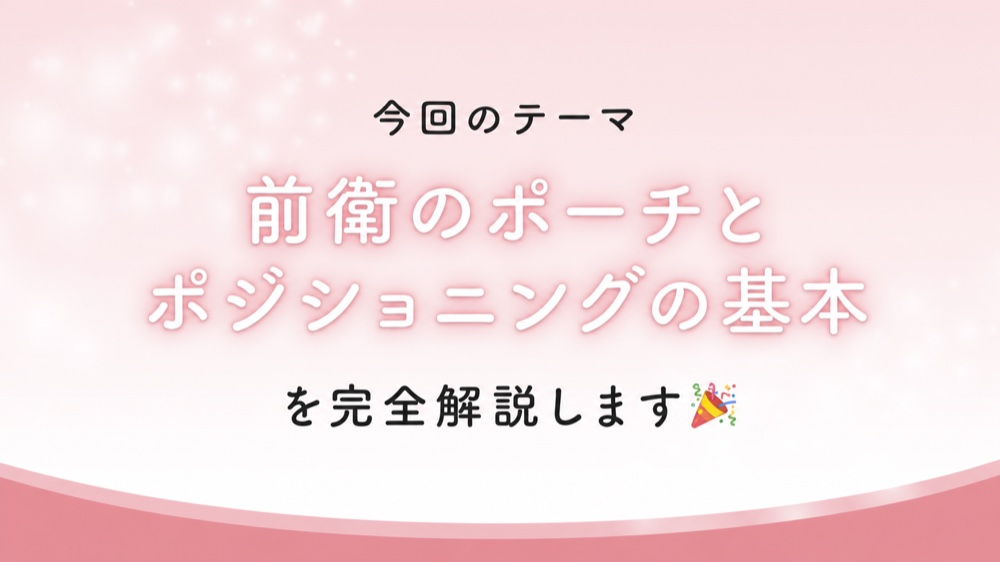
机の上のパソコンやマイクが「人物じゃない」と誤判定されて消えてしまう…という声にお応えして、色をヒントに復活させる機能を追加しました。動画再生時のチラつき対策も入れてあります。実際の受講生素材で比較したところ明確な改善が見られたため、今回から既定でONになっています。
何もしなくても自動で適用されます。まれに背景がまだらになる等の副作用が出た場合は、step10 のガイドに記載の方法でオフにできます。
これまで文字起こし（Speechmatics）や画像生成（Gemini・Lovart）のAPIキーは、プロジェクトを作るたびに .env に手で貼り付けてもらう必要がありました。
今回から一度設定すれば、以降の全プロジェクトで自動的に使い回されます。過去のプロジェクトに設定済みのキーがあれば「そこから使いますか？」と聞かれるだけ。初めての設定でも、コピーしてチャットに「できた」と送るだけで完了します（キーの値をチャットに貼る必要はありません）。
Speechmatics・Gemini・Lovart（ACCESS/SECRETペア）すべて同じ方式に対応しています。
「SEが小さい」というお声にお応えして既定音量を倍にしました。個別に音量調整済みのプロジェクトには影響ありません。
数字を含む文章が、本来ネガティブな内容でも常に「データ強調」の金色デザインになってしまうバグを直しました。
これまでは短い文にしか使われず出番が少なかったのですが、文の長さではなく「発話の結論・断定かどうか」で判定するように変更。長めの発話でも自然に使われるようになりました。
発信者本人ではなく、ターゲット層の情報を使って画像を生成するように変更。発信者と視聴者層の性別が違う場合に画像がミスマッチになる問題を解消しました。
YouTube向け / X向けを選ぶだけで、適切な画質で書き出せるようになりました。
台本が無い・内容が薄い動画では、これまで「必須」と案内だけされて実は素通りしていたレビュー工程を、実際に必ず立ち止まるよう修正しました。
台本→スライド生成の工程で、好きな背景画像を差し込めるようになりました。
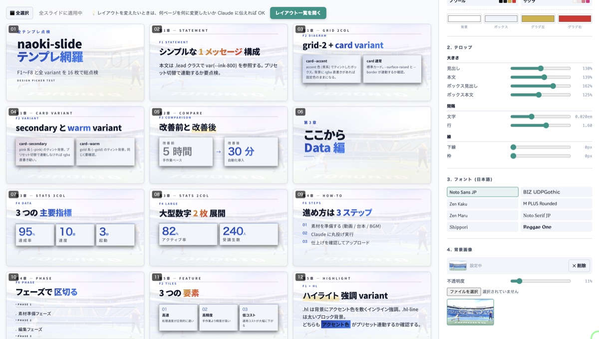
Windows環境でのプロンプト送信・画像リサイズまわりの内部的な不具合をいくつか修正し、より安定して動くようにしました。
パソコンのGPUを使ってレンダリングを速くするオプションを試験的に追加しました。効果は動画の内容によって変わり（1〜2倍程度）、既定ではオフのままです。
試したい方は node scripts/setup-remotion-gl.mjs を実行してください。実際に計測して効果があれば自動的に有効になります。
アップデート方法
いつも通り自動で届きます（次に Claude Code で step を実行した時に反映・24時間に1回）。今すぐ反映したい場合はプロジェクトのフォルダで:
bash アップデート.sh